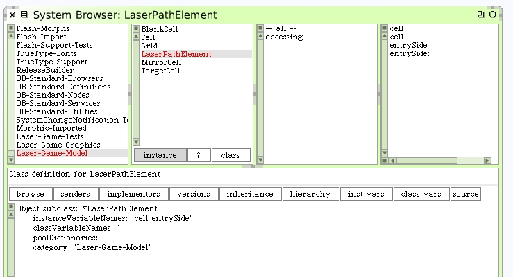
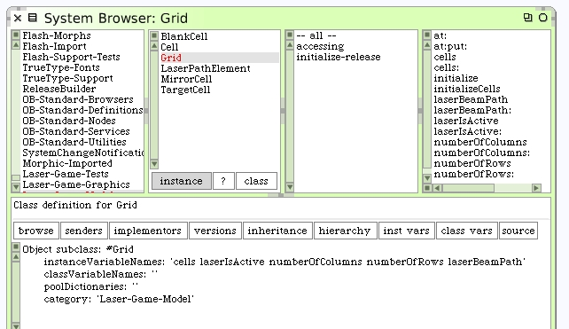
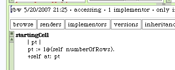

Laser Beam Path
When we consider the path of the laser beam through the grid it's pretty easy to imagine the path as an ordered collection. The elements in the path may not be strictly cells since we will need to be aware how the laser is entering each cell. Make a simple object to hold both pieces of information. I'm certain we'll be able to ask these elements interesting "questions" later. Here's the new class with its accessors.
We're back on the Laser-Game-Model system category.
Go back to the Grid and add an instance variable for the laser beam path and then add its accessors. We'll work out initialization in a few minutes.
We also need a method to answer the starting cell when the laser is activated. This will always be the cell in the bottom left corner.
